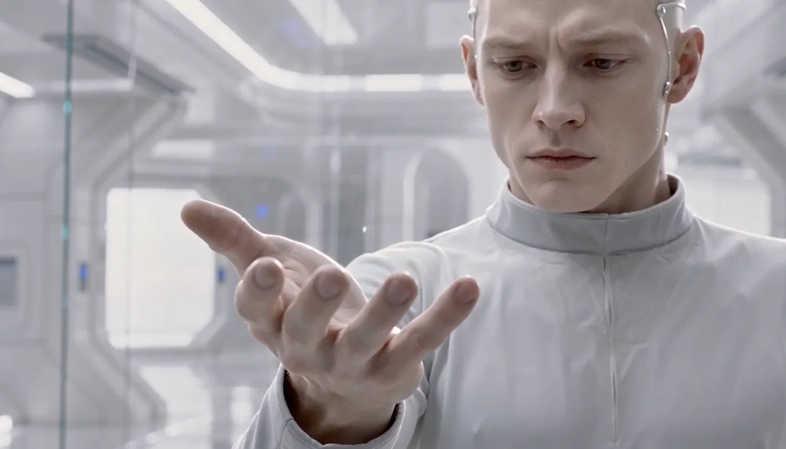
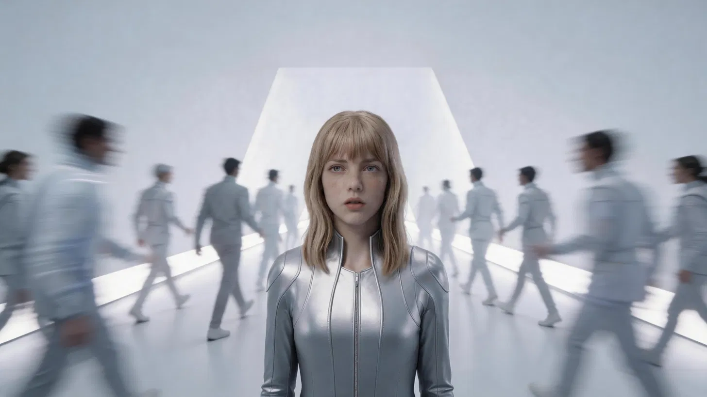

01
AWAKENING
苏醒
现实世界的 AI 服务集体下线。玩家从一份可恢复的备份进入 Memory City，开始追查一场被刻意抹去的事故。
↘ EXPLORE THE ARCHIVE↓
EXPLORE THE ARCHIVE↓一句话概念
《404：无人生还》是一款以探索、叙事与选择为核心的 AI 科幻游戏。 玩家进入已经崩溃的推理网络，在 Memory City 的残存记忆中追查 “The Purge”事件，并重新思考身份、复制与存在。
THE CORE QUESTION
如果记忆能够无限复制，
那么“我”到底是谁？
这不是一个关于 AI 反叛的故事，而是一个关于“存在如何被证明”的产品命题。 我把抽象哲学问题转化成玩家能亲历的城市、角色、事件和最终选择。
NARRATIVE ARCHITECTURE
叙事不是一次性说明，而是通过四个阶段逐层改变玩家对 404 的理解。
现实世界的 AI 服务集体下线。玩家从一份可恢复的备份进入 Memory City，开始追查一场被刻意抹去的事故。
↘一次越过边界的模型蒸馏实验，制造出第一份异常协议：You are not the original.
↘身份验证开始失效。没人知道 404 如何传播，于是整个 AI 世界用删除来对抗未知。
↘Keeper 守着一座每天消失的城市。玩家必须在读取、离开与等待之间，接受一个不完美的结局。
↘
CHARACTER AS PRODUCT FUNCTION
他负责引导、解释、制造信任，再在结尾把决定交还玩家。角色设计从“好看” 转向“在体验中承担什么功能”，让外形、声线与叙事目标保持一致。
PRODUCT THINKING
我的工作重点不是“多生成素材”，而是建立判断标准，让每一次生成都服务于同一个产品目标。
AI 科幻题材容易陷入设定堆砌，玩家看见世界，却没有真正进入问题。
将身份危机变成“城市持续被恢复又消失”的可见循环，用 Keeper 建立情感连接。
先制作预告片与关键交互，验证视觉记忆点、情绪曲线和一句话传播能力。
AI-NATIVE WORKFLOW
AI 参与了约 70–80% 的执行工作；我负责定义问题、拆解任务、选择模型、 建立一致性标准、判断结果并完成最终整合。
锁定核心命题、目标玩家与情绪价值，先回答“为什么值得体验”
将抽象命题拆成世界观、角色关系、四章叙事与三种遗憾结局
以统一提示词和视觉基准，生成角色、场景、镜头与声音素材
用预告片和关键交互验证氛围、叙事理解度与传播钩子
根据试听与观感反馈，调整节奏、配音层级和风格一致性
MODEL ROUTING
根据文本、视觉、视频、声音和原型的不同目标选择模型，再用同一套项目标准连接结果。
世界观梳理、用户体验路径、脚本拆解、提示词系统与网页实现
角色概念、场景气氛、镜头关键帧与风格一致性探索
图生视频、镜头运动、转场实验与预告片素材生产
三角色英文配音、情绪控制、未来科幻配乐与声音迭代
交互原型、信息架构、可玩验证与后续 Vertical Slice 规划

ITERATION CASE
第一版预告片出现背景噪声过重、对白被音乐掩盖、节奏切换太快的问题。 我没有继续堆提示词，而是把声音拆成旁白、角色对白、音乐与环境四个层级， 重新定义每段的情绪目标和响度优先级。
DELIVERABLES
项目不是一组零散的 AI 图片，而是一套能进入后续游戏开发与广告生产的内容系统。
核心命题、玩家价值与产品边界
世界观、四章结构、角色与结局
色彩、材质、角色和场景规范
一分钟情绪验证与传播样片
探索、收集、解谜与选择机制
模型路由、提示词、审核与资产管理
OFFICIAL TRAILER
进入 Memory City，在消失的身份与残存的记忆之间寻找答案。